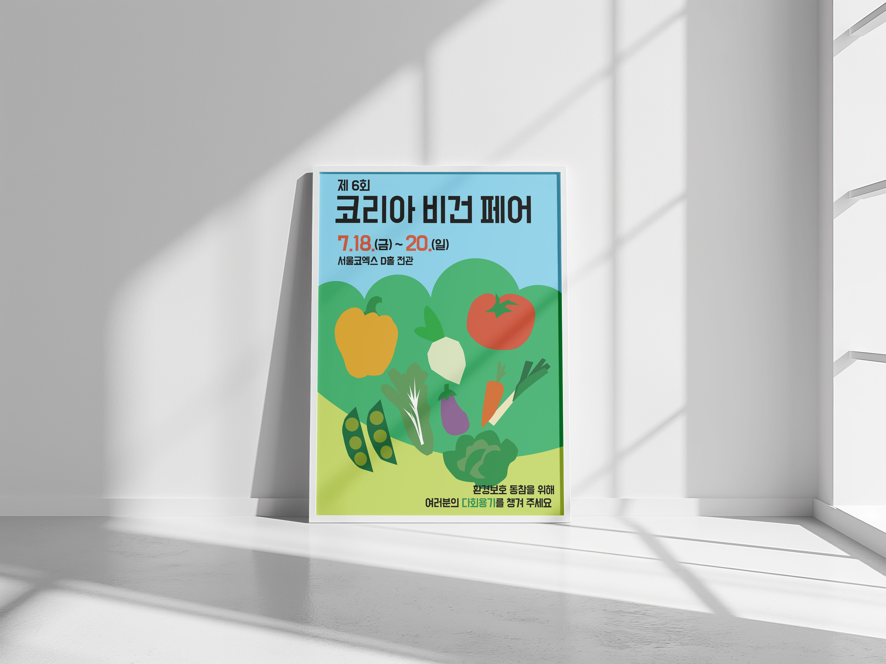
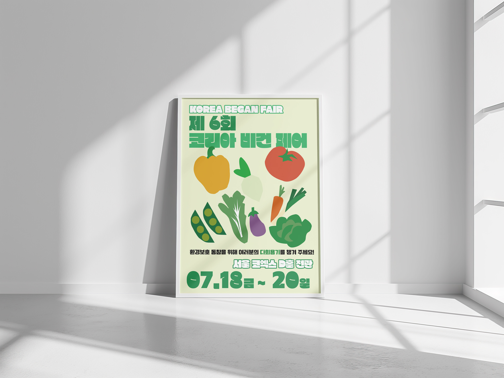
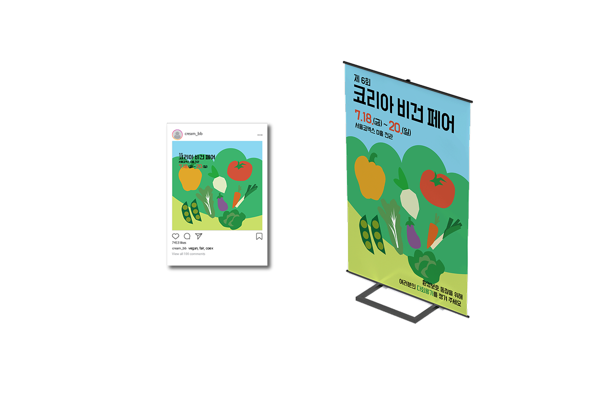

Vegan Fair Poster
목적에 맞는 그래픽과 정보의 위계화

CUT 01. VISUAL
MOTIF
가장 직관적인 전달
화려한 기교보다는 '친환경'과 '건강'이라는 행사의 목적을 대중이 가장 먼저 떠올릴 수 있도록, 채소 실루엣을 활용한 단순하고 명확한 그래픽 모티프를 선택했습니다.

CUT 02.
HIERARCHY
정보의 우선순위 정렬
포스터의 본질은 정확한 정보 전달에 있다고 생각했습니다. 행사명, 일정, 장소가 거리에서도 헷갈림 없이 먼저 읽히도록 폰트의 크기와 명도 대비를 조절하는 데 집중했습니다.

CUT 03.
EXTENSION
다양한 매체로의 적용
메인 포스터의 그래픽이 티켓이나 모바일 화면 등 비율이 완전히 다른 매체에 적용될 때도 어색하지 않도록, 레이아웃의 변형과 여백을 미리 고민하고 테스트해 보았습니다.

CUT 04.
VALIDATION
실제 환경에서의 가독성
화면 속 디자인이 실제 옥외 환경에 걸렸을 때 어떻게 보일지 목업을 통해 가늠해 보았습니다. 빛 반사나 원거리에서의 글자 뭉개짐이 없는지 점검하며 기본기를 다졌습니다.
Design Strategy
- 목적에 충실한 디자인 : 화려함보다는 행사의 성격을 한눈에 보여주는 직관적인 그래픽 모티프 활용
- 기본기를 지키는 레이아웃 : 거리에서도 핵심 정보가 명확히 읽히도록 텍스트 우선순위(Hierarchy) 중심 배치
- 다매체 적용 고려 : 옥외 배너부터 티켓까지, 매체별 비율 변화에 대응 가능한 여백 설계
Color Point
행사의 주제인 '자연과 건강'을 대중이 가장 거부감 없이 편안하게 받아들일 수 있는 색상들로 구성했습니다.
#BDE3F0
맑고 신선한 행사의
첫인상을 부드럽게 전달합니다.
#D2E288
식물과 친환경을
직관적으로 상징하는 베이스 컬러입니다.
#DE8573
단조로움을 피하고
대중의 시선을 모아주는 포인트 색상입니다.
Retrospective
- 화면(RGB)과 실제 인쇄물(CMYK) 간의 발색 오차 및 용지 재질에 대한 실무적 이해도 보완 필요
- 기획 변경이나 다수의 협찬사 로고 추가 등 실무 변수를 대비한 유연한 여백(Grid) 설계의 중요성 인지
- 옥외 설치 환경을 가정한 원거리 가독성(Legibility) 테스트를 통해 타이포그래피 위계 점검
Project Information
Category
Graphic Design
Personal
Project
Concept / Layout design
Typography hierarchy
Typography hierarchy
Duration
2026.01 - 2026.02 (2 Weeks)
Tools
 Illustrator
Illustrator
 Photoshop
Photoshop
Illustrator
Photoshop
Process
Visual motif selection
→ Layout composition → Typography hierarchy → Mockup